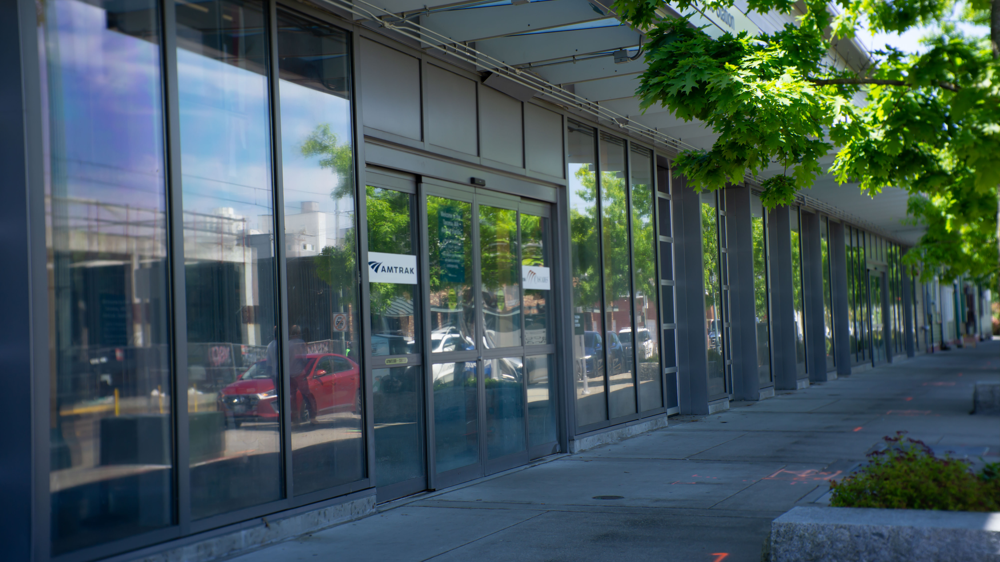
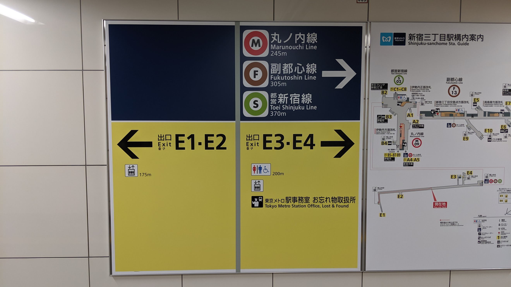
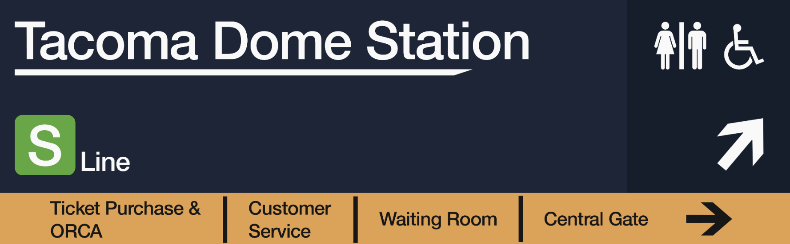
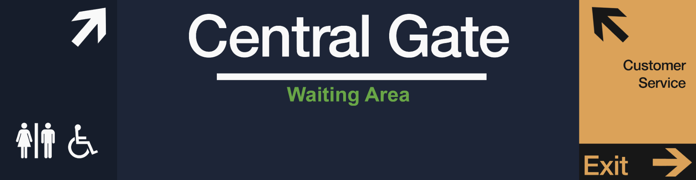

AMTRAK SIGNAGE DESIGN.
Client: Amtrak
Summary: Improved signage for the Amtrak Tacoma Station to better target accessability and navigation.
Problem Statement: First-time and inexperienced travelers at the Tacoma Amtrak Station find it hard to navigate and access important information, leading to uncertainty. There is a need for clearer and more accessibility signage that prioritizes the experience of new riders.
Roles: Researcher, UX Designer, and Graphic Designer.

BACKGROUND
Traveling is hard — even when it's only from one town to another, I know the stress and anxiety of being in unfamiliar spaces all too well. It's often more emphasized in high foot-traffic areas like a train station. That's why, in collaboration with Amtrak, I was tasked with addressing issues related to accessibility, user experience, and navigation at the Tacoma, WA, Amtrak station. From the very beginning, my goal was to create clear, easy-to-read signage for inexperienced or first-time riders to make traveling less overwhelming. I kept new and anxious travelers at the forefront of my decision making.
In collaboration with Amtrak, my class was tasked with addressing challenges related to accessibility, user experience, and navigation at the Tacoma, Washington, station.I focused specifically on improving the signage system in and around the station. My goal was to make it more intuitive, visually appealing, and effective for all users.
IMMERSION
In an effort to observe the stations' frequent pain points and understand the end-user better, I relied on immersion exposure. Seeing as I'd never taken a train before, this was the perfect chance for me to experience what it was like to navigate to the station as a new traveler. Doing this allowed me to create the most efficient designs that I would value the most as a new user.

"I began my trip from the bottom of the stairs at the UW Tacoma campus. As I walked, I noticed very few signs pointing towards the Amtrak station to guide foot traffic — and also actual traffic.
Relying almost entirely on my phone's GPS, I finally arrived at the west side of the building but struggled to locate the main entrance. Not knowing where to go, I reached a pair of doors that a stern-looking security guard gave me passage to. It looked inviting enough, so I somewhat hesitantly entered.
Before the doors opened, I had assumed it was the main gate; however, I later realized it was the “Sounder Entrance.” (Yes, there's a difference.)
This little mistake led me straight to the tracks, which wasn't where I wanted to be. Eventually I turned back and found a new pair of doors that led me to the Amtrak waiting room."
Station observations proved that Amtrak's wayfinding systems were not meeting modern expectations. Everyday users needed something that stood out—something that they could rely on when finding their destinations. Moreover, it uncovered that the station was difficult to locate and navigate. This is detrimental for riders that are running late or those who aren't familiar with train station procedures. Based on my comparative analysis, the Tacoma Amtrak Station has not invested as heavily as other transit stations. It revealed to me what “good” actually looks like. I could better ground my critique on evidence and allow me to refer to how other transit hubs handled it better.
RESEARCH

Located in Washington, D.C., these pylons are used throughout various parts of the city to direct travelers into subway systems. Their appeal comes from the minimal design, using limited color and text.Riders often praise them not just for their functionality, but also for their clean, modern design.

In Tokyo, Japan, these signs follow a unified format, using clean typography, distinct iconography, and a captivating color palette. Like the previous example, Tokyo's signs stand out for their contemporary design, functional simplicity, and ease of following.
SKETCHES

Inspired by the wayfinding pylons used in Washington, D.C., and similarly on the Seattle Link Light Rail. These pylons, in addition to providing important information, would serve as landmarks and orientation. This helps travelers quickly get directions, making navigation easier and more intuitive.

These are simpler designs intended for both outside and inside use. They are more commonly seen in airports and major train stations. I wanted to separate important details (like where to find bathrooms, help desks, and gates) from the general navigational signage posted around the station's exterior.
FINAL DESIGNS


These are the final designs for the pylon signs. They are intended to guide pedestrians toward the Amtrak station and would be strategically placed alongside sidewalks and high-foot-traffic areas. Designed with a front and rear side for the best visibility, it would locate key areas of interest and give quick access to scheduling and map information. To stay faithful to the Amtrak brand, I used the colors that they provide in their style guide. This is a bigger improvement to existing signage for it being easier to see from longer distances and providing the same information in a straight-forward way.


These designs take cues from the Japanese subway system, particularly in its use of bright yellow backgrounds to emphasize high-priority information like ticket purchasing and customer service. Implementing these signs into the station would provide much-needed guidance towards accessibility entrances, gates, and platforms.